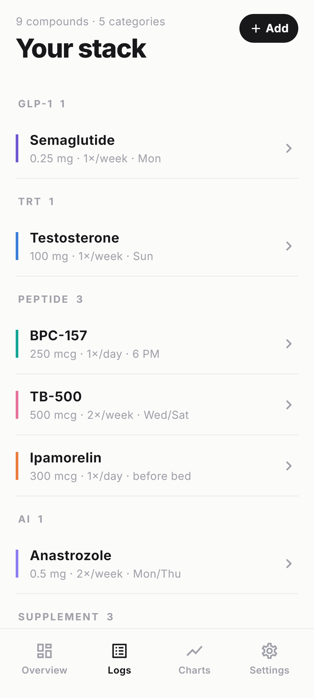

Today
Open it. Log it. Done.
The Today screen is one tap from your lock screen. Doses due, your streak, what runs out next.

A quiet, private place for your whole stack. Supplements, peptides, meds, GLP-1, vitamins.
The Today screen is one tap from your lock screen. Doses due, your streak, what runs out next.
An estimated curve modeled from each compound's half-life. Real model, not a blood test.
Add a compound from the library or scan a label. Stack does the math — recon, supply, refill.

No accounts. No analytics. No ads. Local-first, encrypted, yours alone. Always.
Free · Launching this fall